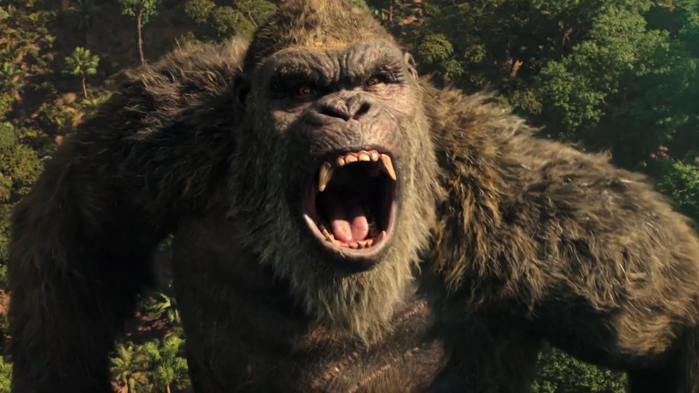

Godzilla vs Kong: Batalha dos Titãs - Uma Análise Definitiva
Em 2021, o mundo presenciou um choque de titãs épicos: Godzilla vs Kong , filme que uniu dois dos monstros mais icônicos da história do cinema em uma batalha colossal. O longa metragem, dirigido por Adam Wingard, inseriu-se no MonsterVerse, universo cinematográfico compartilhado que reúne Godzilla, Kong e outros monstros lendários.
Análise Aprofundada:
Trama:
O filme se inicia com a organização científica Monarch embarcando em uma expedição à Terra Oca, local misterioso e ancestral que esconde segredos milenares. Na busca por uma nova fonte de energia, a organização desperta Godzilla, que inicia um rastro de destruição em seu caminho.
Enquanto isso, a Monarch também procura por Kong, o único ser capaz de rivalizar com o poder de Godzilla. A equipe, guiada por Jia, jovem órfã que possui uma conexão especial com o gorila gigante, encontra Kong em uma ilha remota.
Após uma série de eventos, os caminhos de Godzilla e Kong se cruzam, levando a um confronto épico que se desenrola em diferentes cenários, desde cidades movimentadas até paisagens selvagens. A batalha é brutal e implacável, com os dois titãs utilizando todas as suas habilidades para derrotar o oponente.

Personagens:
- Godzilla: O Rei dos Monstros, retratado como uma força da natureza implacável e poderosa. Seu design imponente e rugidos ensurdecedores transmitem a magnitude de sua presença.
- Kong: O Gigante de Aço, apresentado como um ser majestoso e protetor. Sua conexão com a natureza e a relação com Jia demonstram sua complexidade como personagem.
- Monarca: A organização científica que serve como elo entre os humanos e os titãs. Apesar de suas boas intenções, suas ações geram consequências desastrosas.
- Jia: A jovem órfã que possui um vínculo único com Kong. Sua atuação serve como ponte entre os mundos humano e monstruoso.
Elementos Visuais:
O filme impressiona com seus efeitos visuais de última geração. As cenas de batalha entre Godzilla e Kong são de tirar o fôlego, com detalhes realistas e grandiosidade épica. A trilha sonora também contribui para a atmosfera eletrizante do filme, com músicas que amplificam a intensidade das cenas.
Recepção da Crítica e do Público:
Godzilla vs Kong recebeu críticas mistas da crítica especializada. Alguns elogiaram os efeitos visuais espetaculares e a ação empolgante, enquanto outros criticaram o roteiro fraco e a falta de desenvolvimento dos personagens. Apesar das críticas, o filme foi um sucesso de bilheteria, arrecadando mais de US$ 470 milhões em todo o mundo.
Impacto e Legado:
Godzilla vs Kong consolidou o MonsterVerse como uma franquia de sucesso, abrindo caminho para futuras histórias e batalhas épicas entre os titãs. O filme também serviu como um lembrete do poder da natureza e da importância da preservação do meio ambiente.
Analise Detalhada dos Personagens:
-
Godzilla
- Origem e Poderes: o Godzilla é um monstro pré-histórico que se alimenta de energia nuclear. Ele possui uma força e resistência descomunais, além da capacidade de lançar raios atômicos de sua boca.
- Simbolismo: Godzilla pode ser interpretado como uma representação da força da natureza e do poder da destruição. Sua presença serve como um lembrete do impacto das ações humanas no planeta.
- Evolução no MonsterVerse: No MonsterVerse, Godzilla é retratado como um guardião da Terra, protegendo o planeta de outras ameaças.
-
Kong:
- Origem e Poderes: Kong é um gorila gigante que possui uma inteligência surpreendente e uma conexão especial com a natureza. Sua força física é imensa, e ele consegue utilizar objetos do ambiente como armas.
- Simbolismo: Kong representa a conexão entre a humanidade e o mundo natural. Sua inteligência e capacidade de se adaptar demonstram o potencial da natureza.
- Evolução no MonsterVerse: Ao longo do MonsterVerse, Kong se desenvolve de um gorila gigante confinado em uma ilha para um protetor de seu ecossistema e um aliado potencial contra ameaças maiores.
-
Monarca:
- Objetivos e Função: A organização Monarch dedica-se ao estudo de Titãs, criaturas lendárias que emergiram da Terra. Seu objetivo é compreender essas entidades e encontrar formas de conviver pacificamente com elas.
- Métodos e Controvérsias: Monarch utiliza tecnologia avançada para monitorar e estudar os Titãs. No entanto, suas ações, como a ativação de Godzilla na Terra Oca, geram consequências desastrosas e questionamentos éticos.
- Futuro da Monarch: O papel da Monarch no MonsterVerse permanece incerto. A organização precisa lidar com o impacto de suas ações e encontrar um novo equilíbrio na relação entre humanos e Titãs.
-
Jia:
- Vínculo com Kong: Jia é a última sobrevivente de sua tribo, que possuía uma conexão ancestral com Kong. Ela se comunica com o gorila gigante através da linguagem de sinais, criando um vínculo único e emocional.
- Importância na Narrativa: Jia serve como uma ponte entre o mundo humano e o mundo dos Titãs. Sua presença humaniza Kong e demonstra a possibilidade de coexistência pacífica.
- Futuro de Jia: O destino de Jia após o filme permanece em aberto. Ela pode se tornar uma aliada importante para a Monarch e para a proteção dos Titãs.
Elementos Temáticos:

- Relação Humanidade-Natureza: Godzilla vs Kong levanta questionamentos sobre o impacto da humanidade no planeta. A destruição causada pelos Titãs é consequência direta da exploração desenfreada dos recursos naturais.
- Equilíbrio Ecológico: O filme destaca a importância do equilíbrio ecológico. A Terra Oca, lar dos ancestrais de Kong, representa um ecossistema intocado e fundamental para a saúde do planeta.
- Busca pelo Poder: A Monarch e outras organizações humanas buscam controlar o poder dos Titãs para seus próprios fins. Essa ambição desenfreada coloca o mundo em risco.
Além da Tela Grande - Expandindo o MonsterVerse:
O MonsterVerse se estende para além de Godzilla vs Kong. Vamos explorar alguns conteúdos adicionais que enriquecem o universo dos Titãs:
- Quadrinhos: A Legendary Comics publica uma série de quadrinhos que exploram histórias paralelas aos filmes do MonsterVerse. Essas histórias detalham o passado dos Titãs, as atividades da Monarch e as consequências dos eventos dos filmes.
- Séries Animadas: Séries como "Skull Island" e "Godzilla: Singular Point" exploram o MonsterVerse em formato animado. Essas produções oferecem novas perspectivas sobre os Titãs e o mundo em que eles habitam.
- Novelas: Livros como "Godzilla: Aftershock" e "Kong: Skull Island - Birth of a King" aprofundam a mitologia do MonsterVerse e fornecem detalhes adicionais sobre os personagens e eventos dos filmes.
Analisando o Impacto Cultural:
Godzilla vs Kong se insere em uma longa tradição de filmes de monstros gigantes. O longa metragem homenageia clássicos do gênero como "King Kong" e "Godzilla, King of the Monsters!", ao mesmo tempo que atualiza a fórmula para o público contemporâneo.
O filme também reflete o interesse atual em questões ambientais. A destruição causada pelos Titãs serve como um alerta sobre as consequências das mudanças climáticas e da exploração desenfreada da natureza.
Godzilla vs Kong: Uma Batalha com Repercussões:
Godzilla vs Kong não é apenas um filme de pancadaria entre monstros gigantes. O longa metragem explora temas complexos e deixa um legado que vai além da telona. O filme nos faz refletir sobre nosso lugar no planeta e a importância de convivermos em harmonia com a natureza.
Possíveis Futuros para o MonsterVerse:
O final de Godzilla vs Kong deixa em aberto o futuro do MonsterVerse. Com a introdução de novos Titãs e a revelação da Terra Oca, o universo cinematográfico possui um vasto potencial para futuras histórias. Algumas possibilidades incluem:
- Novos Inimigos: O surgimento de novos Titãs malignos pode forçar Godzilla e Kong a uma aliança improvável para proteger a Terra.
- Exploração da Terra Oca: A descoberta da Terra Oca abre caminho para histórias que explorem esse mundo subterrâneo misterioso e as criaturas que habitam nele.
- Consequências das Batalhas: O filme mostra apenas os impactos imediatos dos confrontos entre Titãs. Futuros filmes poderiam explorar as consequências a longo prazo da destruição causada.
Para Além do MonsterVerse:
O sucesso de Godzilla vs Kong reacendeu o interesse do público por filmes de monstros gigantes. Vamos analisar brevemente a influência do MonsterVerse em produções similares:
- Ressurgimento do Gênero: O MonsterVerse contribuiu para o retorno do gênero kaiju (monstro gigante) aos holofotes. Filmes como "Pacific Rim: Uprising" e "https://collider.com/new-toho-godzilla-movie-release-date-2023" ("Shin Godzilla" no original japonês) se beneficiaram do interesse renovado por esse tipo de história.
- Inspiração para Novas Criaturas: O MonsterVerse inspirou a criação de novos monstros gigantes para o cinema e a televisão. Séries como "Love, Death & Robots" e filmes como https://en.wikipedia.org/wiki/Cloverfield ("Cloverfield") apresentam criaturas gigantes originais com designs impressionantes e histórias instigantes.
- Futuro do Kaiju: O futuro do gênero kaiju parece promissor. Com o avanço da tecnologia de efeitos visuais, podemos esperar por batalhas entre monstros cada vez mais espetaculares e realistas. Além disso, há espaço para produções que explorem temáticas ambientais e sociais utilizando monstros gigantes como metáforas.
Considerações Finais:
Godzilla vs Kong é um filme de entretenimento grandioso que diverte o público com batalhas épicas entre titãs lendários. No entanto, o longa metragem também oferece camadas mais profundas, convidando o espectador a refletir sobre a relação da humanidade com a natureza e as consequências de nossas ações. O filme se insere em um rico universo cinematográfico com potencial para futuras histórias empolgantes. Seja pela ação eletrizante, pelos personagens cativantes ou pelos temas instigantes, Godzilla vs Kong certamente deixa uma marca marcante na cultura pop.
Conclusão:
Godzilla vs Kong é um filme grandioso e cheio de ação que empolga os fãs de longa data desses personagens icônicos. No entanto, o filme também oferece uma reflexão sobre a relação entre a humanidade e a natureza, tornando-se mais do que apenas um entretenimento escapista. Com sua trama envolvente, personagens cativantes e efeitos visuais impressionantes, Godzilla vs Kong se consolida como um marco no Monster
Referências
- Wingard, A. (Diretor). (2021). Godzilla vs Kong [Filme]. Warner Bros. Pictures.
- Legendary Comics. (2021). Godzilla vs Kong: Série de quadrinhos [Quadrinhos]. Legendary Comics.
- "Skull Island". (2023). [Série de televisão animada]. MonsterVerse Studios
- "Godzilla: Singular Point". (2022). [Série de televisão animada]. Toho Animation.
- "Godzilla: Aftershock" (Autor), "Kong: Skull Island - Birth of a King" (Autor). (2021). [Livros]. Random House.